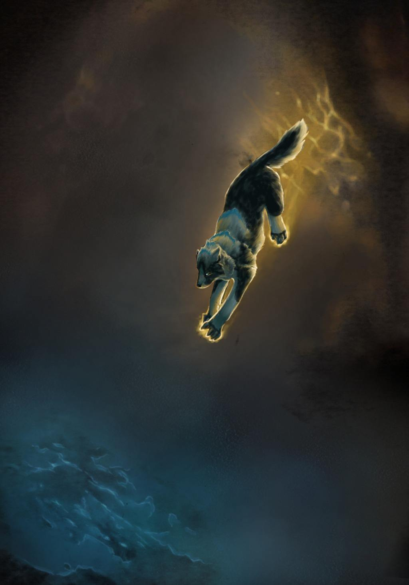
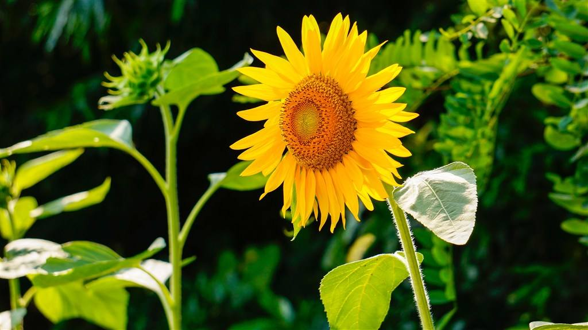
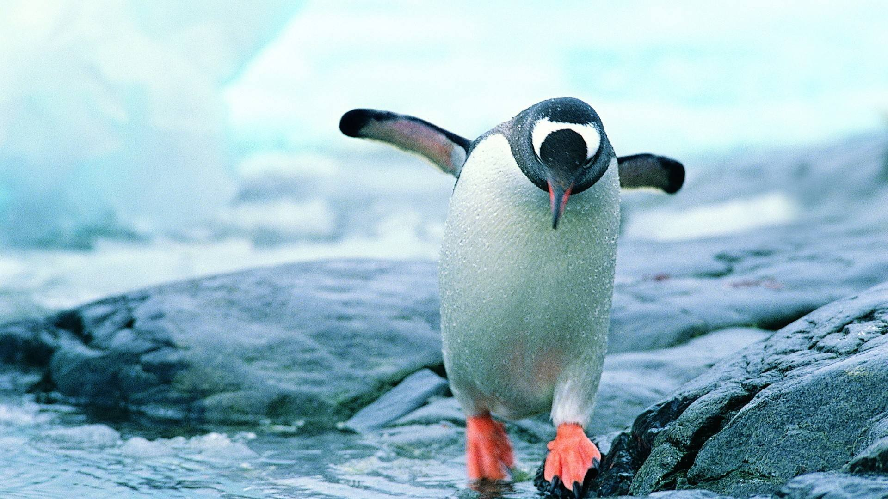

说到新西兰不说不提到风靡全球的《指环王》和《霍比特人》电影。一丝不苟的实地取景让粉丝们对中土世界惊叹的同时也被新西兰的美景实力圈粉。虽然南岛自驾游热力全开，但是北岛的霍比屯却是最受欢迎的中土世界。所以我们先来说说在北岛该怎么玩~
新西兰北岛不可错过的TOP3景点

北岛旅游虽然不如南岛火，但是它的景点却没有因此打折扣，其中甚至有新西兰这个大IP的经典。那么是有哪些不可不玩呢？吃我这个安利，让你可以计划一个美好的北岛之旅。
新西兰北岛最经典玩法丨《指》《霍》粉绝不可错过的！
可爱的迪迪:
在瑞士学习生活多年，停不下闲不住，自由行过欧、美、大洋洲多个国家。每一天都在为你也为自己计划下一次更好的旅行。
   等2796人咨询过TA


说到新西兰不说不提到风靡全球的《指环王》和《霍比特人》电影。一丝不苟的实地取景让粉丝们对中土世界惊叹的同时也被新西兰的美景实力圈粉。虽然南岛自驾游热力全开，但是北岛的霍比屯却是最受欢迎的中土世界。所以我们先来说说在北岛该怎么玩~
北岛旅游虽然不如南岛火，但是它的景点却没有因此打折扣，其中甚至有新西兰这个大IP的经典。那么是有哪些不可不玩呢？吃我这个安利，让你可以计划一个美好的北岛之旅。
个人情怀，霍比屯在我心目中是北岛第一。虽然是私心，但是这里确实是《指环王》粉丝的必到之处、新西兰的地标之一。
霍比屯说大不大，说小也不小，第一次去需要怎么走才能不错过经典呢？其实不管你是跟团还是自己购票，霍比屯都会给你安排一个向导。在向导的带领之下你可以把霍比屯走个遍，不怕错过经典场景了。
如果时间允许，傍晚时候的霍比屯最值得一去：享受夕阳和袋底洞路灯的星火辉映，还能在绿龙酒馆尽情享用一顿晚餐。不过绿龙酒馆晚宴需要尽早预订，因为每天的晚餐人数都有严格限制，超过48人就不会再接待了。
怀托摩萤火虫洞是一个错综复杂的地底迷宫。和澳洲的蓝光萤火虫不一样的是，你需要泛舟顺着地下河流深入溶洞，这里的萤火虫栖息面积更为广阔让你感觉置身在一个蓝色的银河。
怀托摩除了萤火虫洞还有鲁阿库利溶洞和阿拉奴伊溶洞，这两个溶洞主要是看钟乳石和探索地下洞穴的。相对来说不是特别推荐，因为我们国内也有很多精美绝伦的溶洞，不是太稀罕。
不用怕迷失在洞穴中，景点会安排向导给你、而且必须在向导的带领下你才能进入萤火虫洞
自驾到怀托摩的景点服务区，这里有专门的停车场。之后由向导带领大家去萤火虫洞。
到北岛一定要到罗托鲁瓦游览地热公园，因为这些地热公园是大自然赋予罗托鲁瓦最好的礼物。对，我说的是“这些”。罗托鲁瓦不止一个地热公园，而且有收费的也有免费的。
诺克斯夫人间歇泉Lady Knox Geyser自然喷出的水柱最高的时候有20米。并且它每天都会定时喷发，只要准时，你都可以看到这个奇观。而沸泥塘的泥浆咕噜咕噜的沸腾翻腾着，真的是一种怪异又奇妙的景象。
诺克斯夫人间歇泉虽然喷发时间是每天上午10点15分，但是你最好9点半的样子就到场，这样可以占个好位置。
在国内旅游、出境旅游市场已全部
实现了计算机联网操作。网络具备
了专业的旅游产品销售体系，在同
行业中更具市场领先优势。
联系我们
微企点网址 : http://www.zhouxq.me
QQ交流群：2921188500
支持邮箱：18928498593@163.com
新浪微博：纪宁希